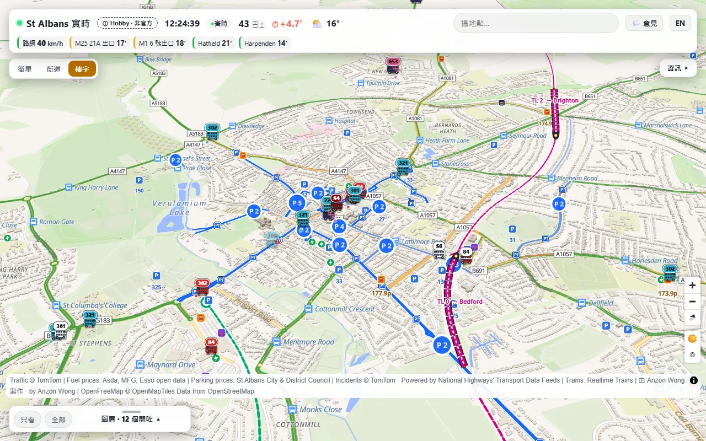
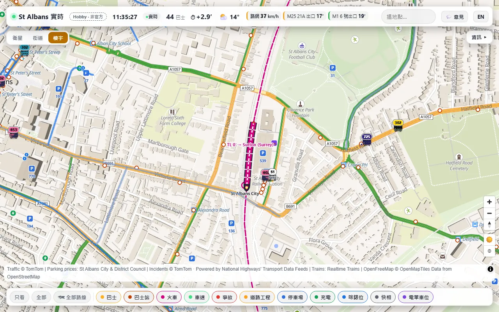
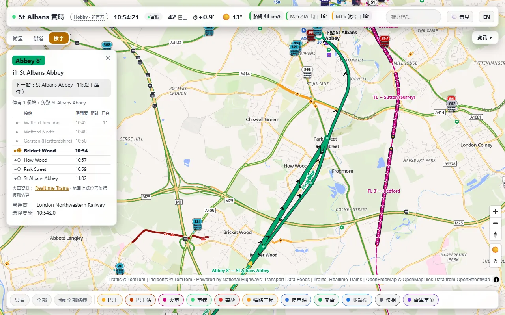
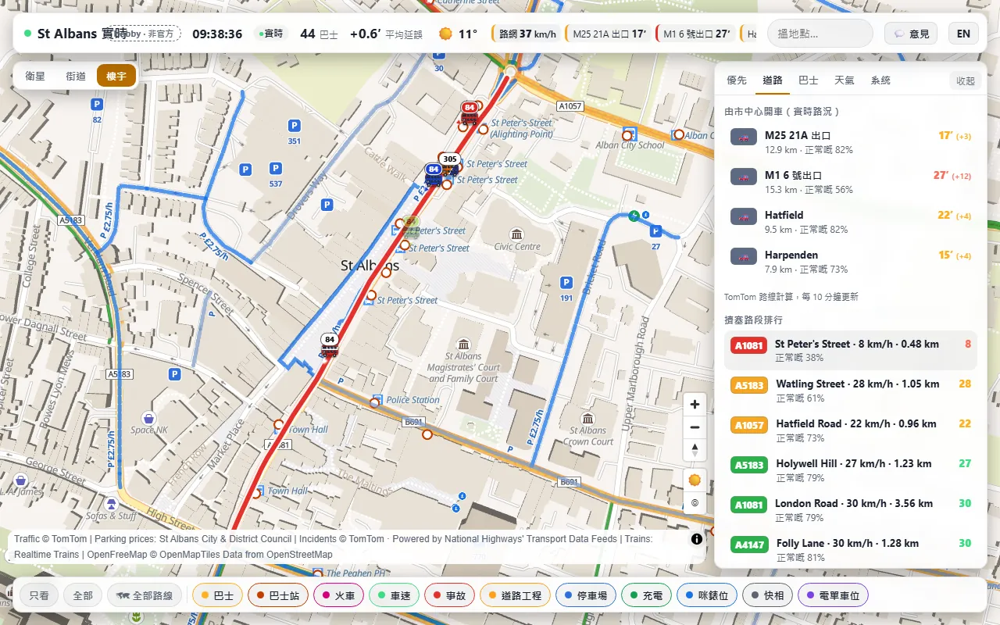
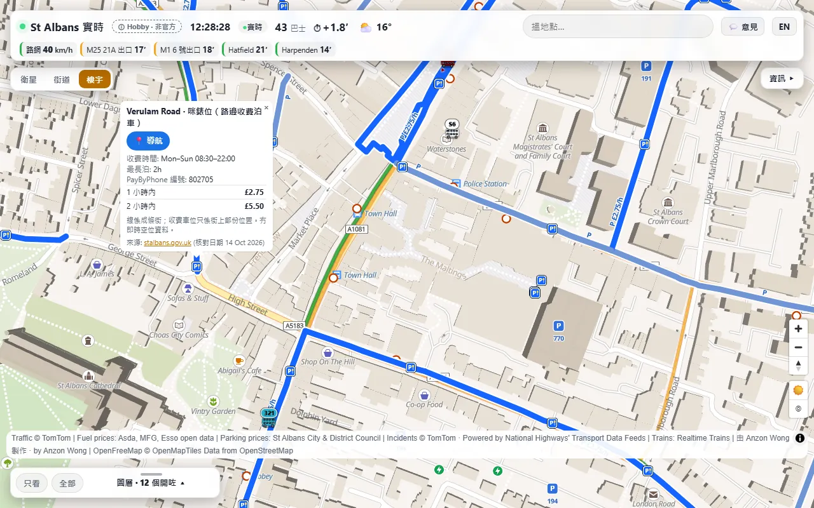
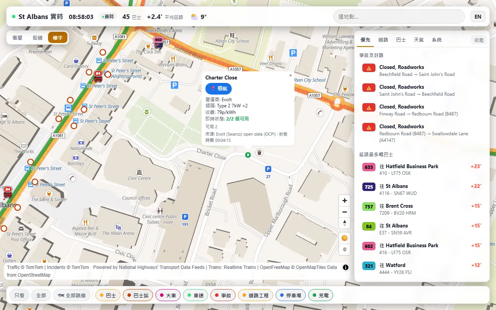
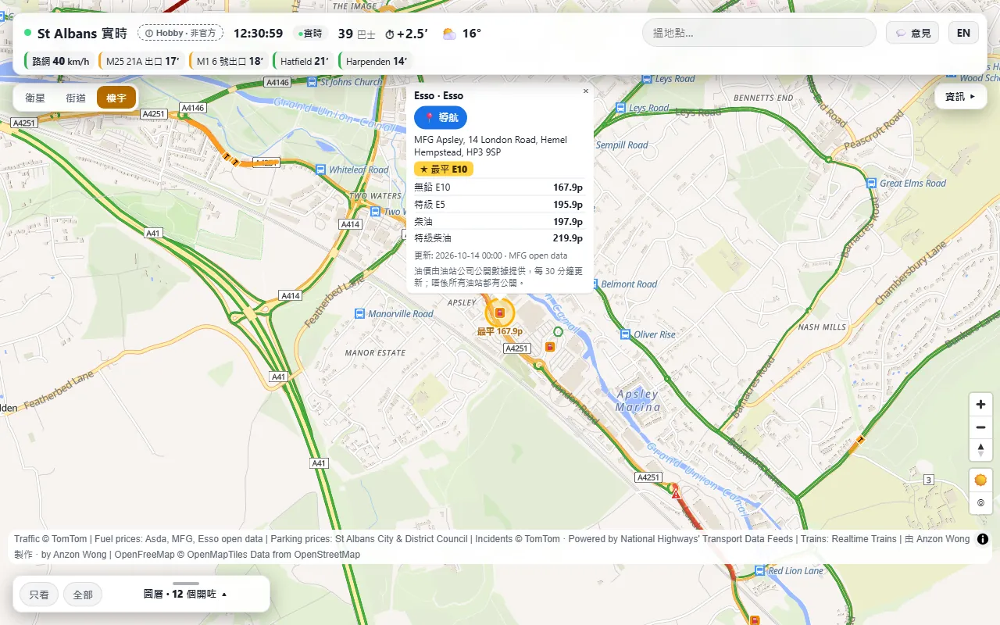
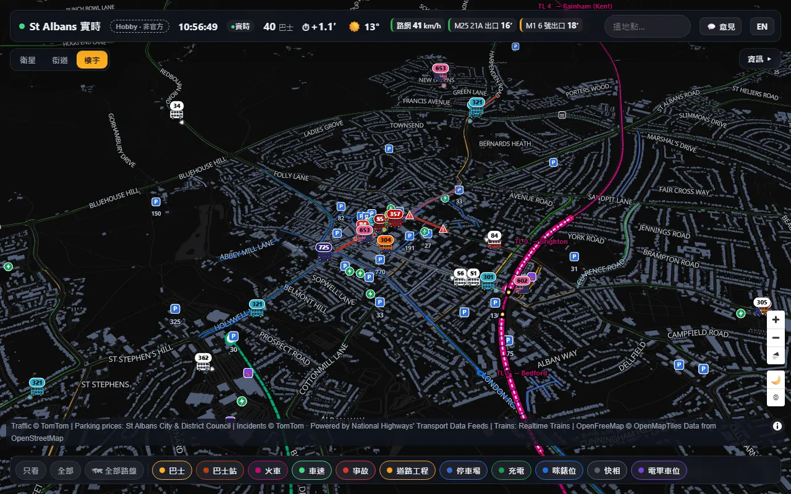

St Albans LiveSt Albans 實時地圖
A live 3D map of St Albans. Buses, trains, road speeds, parking, EV chargers and fuel prices, on one screen, in English or Traditional Chinese.
St Albans 的立體實時地圖。巴士、火車、車速、泊車、電動車充電及油價，盡在同一畫面，提供英文及繁體中文。

88 seconds, music only. Desktop first, then a phone.
片長 88 秒，只有背景音樂。先示範電腦版，再示範手機版。
- Buses巴士Every bus in the area, drawn in its operator's real livery and moving smoothly along the road between updates. Tap one for its route in both directions and its next stop.區內每一輛巴士，按營運商真實塗裝繪畫，兩次更新之間沿道路平滑移動。點選巴士可看雙向路線及下一站。
- Trains火車Thameslink and Abbey Line trains as carriages on the real track. Tap one for every stop with booked and expected times and platforms. Positions are estimated from the live departure board, not GPS.Thameslink 及 Abbey Line 列車以車卡形式顯示於真實路軌上。點選列車可看每個停靠站的預定及預計時間和月台。列車位置按實時班次表推算，並非 GPS。
- Roads道路Live road speeds, drive times to the M25, the M1, Hatfield and Harpenden, and a ranking of the slowest roads.實時車速、往 M25、M1、Hatfield 及 Harpenden 的車程，以及最擠塞路段排行。
- Incidents and roadworks事故及道路工程Closures, accidents, queues and roadworks, including the motorways.封路、交通意外、車龍及道路工程，包括高速公路。
- Parking泊車Car parks and pay and display streets with their published tariffs and PayByPhone location codes. There are no live space counts: none are published.停車場及咪錶街道，附官方收費及 PayByPhone 位置編號。沒有實時空位數字，因為並無公開資料。
- EV chargers電動車充電Live status and price per kWh where the operator publishes an open feed. Where it does not, the card says the price is not published.營運商有公開數據的充電樁，顯示即時狀態及每度電價錢；沒有公開數據的，則註明價錢未公開。
- Fuel油價Pump prices from the retailers' open price data, with the cheapest E10 marked.按油站公開價格數據顯示油價，並標示最便宜的 E10。
- Day and night, 繁/EN日夜模式、繁/ENThe map turns dark at sunset, or by hand, and every label switches between English and Traditional Chinese.日落後自動轉為夜間地圖，亦可手動切換；所有文字均可在英文及繁體中文之間轉換。







I built it in about a day, on 13 and 14 October 2026, by directing an AI agent and checking every version on screen.
It is plain HTML and JavaScript, with MapLibre GL JS for the 3D map. Small Cloudflare Pages Functions fetch the live feeds, cache them and keep every API key on the server, so no key reaches the browser.
Six versions in two days, shaped by four rounds of my own comments: smaller buses with legible route numbers, trains as carriages, parking meters you can see at night, and a layer drawer that suits a phone.
我在 2026 年 10 月 13 及 14 日，用大約一天時間指揮 AI 代理人完成，每個版本都在螢幕上逐一檢查。
網頁以純 HTML 及 JavaScript 編寫，立體地圖使用 MapLibre GL JS。實時數據由 Cloudflare Pages Functions 擷取及快取，所有 API 金鑰只存於伺服器，不會傳到瀏覽器。
兩天內共六個版本，按我四輪意見修改：縮小巴士並令路線號碼清晰可讀、以車卡顯示列車、咪錶位在夜間亦清楚可見，以及適合手機使用的圖層抽屜。
- Buses巴士bustimes.org (Bus Open Data)
- Trains火車Realtime Trains
- Speeds, drive times, incidents車速、車程、事故TomTom
- Motorway closures and roadworks高速公路封路及工程Powered by National Highways' Transport Data FeedsPowered by National Highways' Transport Data Feeds
- Parking tariffs泊車收費St Albans City and District Council, APCOA, SABA
- EV chargers充電樁Open data from Evolt (Swarco), MFG EV Power and GeniePoint; locations from OpenStreetMapEvolt（Swarco）、MFG EV Power 及 GeniePoint 公開數據；位置來自 OpenStreetMap
- Fuel prices油價Open price data from Asda, MFG and EssoAsda、MFG 及 Esso 公開價格數據
- Map地圖MapLibre, OpenFreeMap, © OpenStreetMap contributors, Esri World Imagery
- Routes, weather, search路線、天氣、搜尋OSRM, Open-Meteo, Photon (Komoot)
A personal hobby project, not an official service of the council, the bus or train operators or any data provider. For reference only: do not rely on it for navigation, safety or travel decisions. Live data can be late, wrong or missing, and train positions are estimates.
此為個人興趣項目，並非地方議會、巴士或鐵路營運商，或任何資料提供者的官方服務。僅供參考，請勿用作導航、安全或出行決定的依據。實時數據可能延誤、出錯或缺漏，列車位置亦只屬推算。